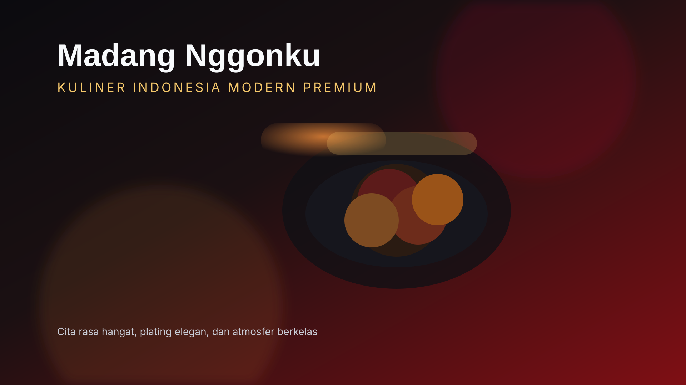
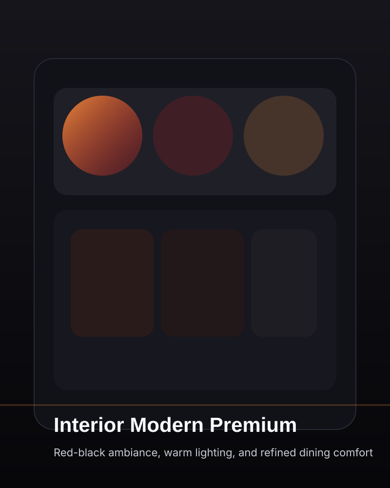

Restoran modern bernuansa merah hitam
Sejak 2026 · Sleman, Yogyakarta
Cita Rasa Masakan Ibu, Disajikan dengan Elegan
Madang Nggonku menghadirkan pengalaman bersantap premium dengan resep Nusantara yang disajikan modern, hangat, dan penuh karakter untuk keluarga, wisatawan, dan pecinta kuliner.

Tentang Kami
Ruang makan premium yang merayakan rasa, detail, dan kenyamanan
Madang Nggonku lahir untuk menghadirkan pengalaman kuliner Indonesia yang lebih berkelas tanpa kehilangan kehangatan rumah. Setiap hidangan diracik dari bahan segar, disajikan dengan plating modern, dan didukung layanan profesional yang ramah.
Pengalaman premium
Suasana elegan untuk makan malam keluarga, momen spesial, dan pertemuan bisnis.
Bahan segar
Kami memilih bahan berkualitas dan bumbu segar untuk rasa yang konsisten.
Kenapa Memilih Kami
Layanan cepat, bahan premium, dan tim chef yang paham detail rasa
Kami menggabungkan kecepatan layanan, kebersihan, dan presentasi modern untuk menghadirkan pengalaman makan yang konsisten dan berkelas.
Fast service
Proses pemesanan dan penyajian dirancang efisien agar tamu tetap nyaman tanpa menunggu terlalu lama.
Premium quality
Setiap bahan dipilih ketat, dari rempah sampai protein, untuk menjaga rasa dan kualitas visual.
Fresh ingredients
Menu disiapkan dari bahan segar harian agar aroma, tekstur, dan cita rasa selalu optimal.
Professional chef
Tim dapur berpengalaman menjaga standar resep, plating, dan konsistensi rasa di setiap sajian.
Testimoni
Cerita tamu yang merasakan pengalaman kuliner berbeda
Slider ini menampilkan ulasan tamu yang menggambarkan rasa, pelayanan, dan atmosfer restoran kami.
Reservasi
Siap merasakan cita rasa masakan terbaik di dunia?
Reservasi sekarang dan dapatkan welcome drink gratis untuk pemesanan makan malam pada akhir pekan.